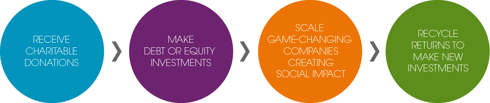

What we do
Acumen raises charitable donations to invest in companies, leaders, and ideas that are changing the way the world tackles poverty.
Acumen raises charitable donations to invest in companies, leaders, and ideas that are changing the way the world tackles poverty.
Acumen started as an idea. Now our investments have impacted the lives of over 100 million people.
Learn More +The future depends on a new breed of leader, ready to solve the world’s most challenging problems.
Learn More +We won’t succeed alone, which is why we share ideas for others to build on and make better.
Learn More +We’ve shown what’s possible
but there's lots more to do
Acumen started as an idea to combine the best of markets with the best of aid and charity. Now we have a proven model that’s giving the poor access to everything from ambulances to electricity.

92
Companies
Providing choice not charity
$101
Million invested
in breakthrough innovations

58,000
Jobs created & supported
improving livelihoods and economies

189
Million Lives Impacted
With dignity not dependence
As a non-profit, we raise charitable donations that allow us to make patient long-term debt or equity investments in early-stage companies providing reliable and affordable access to agricultural inputs, quality education, clean energy, healthcare services, formal housing, and safe drinking water to low-income customers.
 Learn More
Our mission is to change the way the world tackles poverty by investing in companies, leaders, and ideas.
We started Acumen to change the way the world tackles poverty; to influence traditional charity by moving from a top-down approach toward one that’s bottom-up: approaching low-income people as part of the solution, seeing investment as an important tool for change, and insisting on stronger metrics of accountability.
Today, there is a vibrant and growing “impact investing” sector with hundreds of funds and billions of dollars being invested in companies tackling some of the biggest social issues of our time. Along the way, we also discovered that without the right talent, these companies fail. The types of companies we invest in need a different kind of leadership, equipped with the moral imagination and resilience to meet the complex challenges of our time. That’s why Acumen also invests in building a global ecosystem of leaders who share common values, have the hard skills to produce results, and possess a deep unwavering commitment to creating a more inclusive world. Finally, we believe that no organization can do this alone, which is why we invest in the spread of ideas.
Our work supporting companies and leaders forms the foundation of everything we do. When we gain insight in these areas, we invest in sharing them with the world. To learn more about the type of companies and leaders we believe are needed to change the way the world tackles poverty, read our manifesto.
Our new report, written in conjunction with Bain & Company, and with support from the Bill and Melinda Gates Foundation, unveils what is needed to truly scale agricultural innovations to reach millions of smallholder farmers.
Acumen has partnered with AlphaSights, an industry leader in connecting those seeking information with relevant experts across the globe.
This year, with funding from the Aspen Network for Development Entrepreneurs (ANDE), we partnered with Grameen Foundation and Acumen investee Ziqitza Health Care Limited to test a more company-friendly approach to collecting customer data in India.
Here are a few questions that aspiring leaders, especially those devoted to social impact, should pose to themselves.
{kind=link}